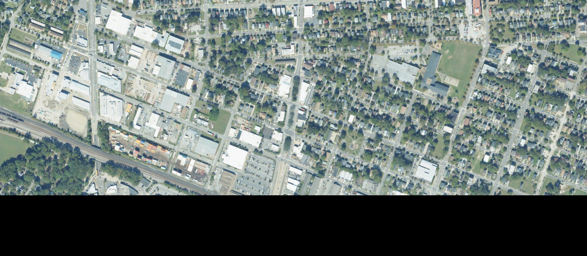
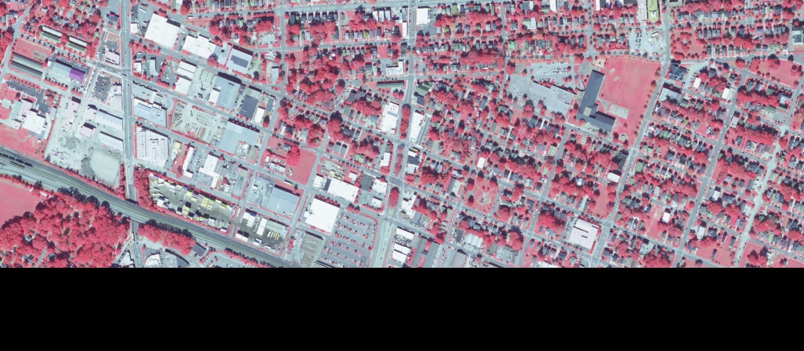
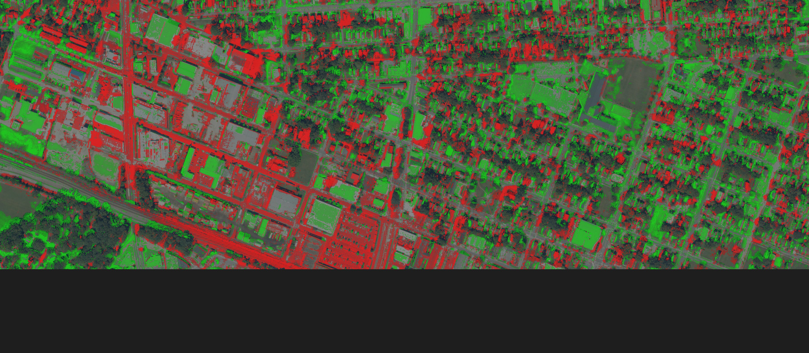

Norfolk, VA — satellite analysis, 2011–2023
Norfolk's Ghent neighborhood has a mature urban tree canopy that residents value deeply. The city has not updated its tree survey in years. So we looked at the data ourselves.
Using publicly available USDA NAIP aerial imagery at 0.5-meter resolution, we compared Ghent's tree canopy across seven vintages from 2011 to 2023, then cross-checked our findings against the USDA Forest Service's independent NLCD Tree Canopy Cover dataset. Drag the sliders below to compare.
June 2011 (left) vs October 2023 (right). Drag the divider.

Jun 2011 Oct 2023In color-infrared composites, healthy vegetation appears bright red. Roads and buildings are gray or blue. This makes it straightforward to see where trees have been removed or where new vegetation has grown in.
Drag the divider to compare 2011 (left) vs 2023 (right).

Jun 2011 Oct 2023Vegetation change detected by comparing each pixel's NDVI rank between 2011 and 2023. Only pixels where at least one year had vegetation are highlighted — pavement-to-pavement changes are filtered out.

| Study area | 262 acres | ~0.4 sq mi of Ghent |
| Vegetation cover, 2011 | 106 acres | 40.6% of study area |
| Vegetation cover, 2023 | 105 acres | 40.0% of study area |
| Detected canopy loss | 35 acres | 13.4% of study area |
| Detected canopy gain | 34 acres | 13.0% of study area |
| Stable canopy (unchanged) | 77 acres | 29.5% of study area |
| Net change | ~−1 acre | −0.4% |
The headline number — near-zero net change — masks a much more turbulent reality. 35 acres of vegetation were lost and 34 acres gained, meaning roughly a third of Ghent's canopy turned over in twelve years. The trees standing in 2023 are, in many places, not the same trees that stood in 2011.
The change map reveals the spatial pattern. Red clusters concentrate along the commercial corridor (Monticello Ave / Colley Ave) and scatter through residential blocks — marking where mature canopy was removed for new construction, parking expansion, or storm damage. Green patches appear on the east side and in yards where young trees have grown in or landscaping has filled former gaps.
The most important finding: only 77 of Ghent's 106 original canopy acres are still standing. That means 29 acres of mature tree canopy — trees that took decades to reach full size — have been lost and replaced. The 34 acres of new vegetation are predominantly young growth that provides less shade, less stormwater absorption, and less wildlife habitat than the mature canopy it replaced.
A fair objection: the 2023 image was captured in October, while the 2011 image is from June. Could the apparent changes just be deciduous trees losing leaves in fall?
To test this, we ran the same analysis against every available same-season pair. NAIP captured Ghent in June 2011, May 2012, July 2014, and July 2016 — all spring/summer imagery where deciduous trees carry full canopy. If seasonal effects were driving our results, the same-season comparisons would show much less churn. They don't.
| Comparison | Seasons | Loss | Gain | Net | Stable canopy |
|---|---|---|---|---|---|
| 2011 → 2012 | Jun → May | 32.2 ac | 32.6 ac | +0.4 ac | 95.4 ac (31.0%) |
| 2011 → 2014 | Jun → Jul | 36.2 ac | 36.1 ac | −0.1 ac | 90.8 ac (29.5%) |
| 2011 → 2016 | Jun → Jul | 41.1 ac | 43.8 ac | +2.7 ac | 86.2 ac (28.0%) |
| 2011 → 2023 | Jun → Oct | 35.0 ac | 33.9 ac | −1.0 ac | 77.3 ac (29.5%) |
Three things jump out from this table:
1. The churn is real, not seasonal. Even comparing June 2011 to July 2016 — both peak summer, both full canopy — we see 41 acres of loss and 44 acres of gain. This is not an artifact of photographing trees in October.
2. Vegetation percentage is rock-solid at 40% across all seven vintages, regardless of season. The rank-based classification identifies the same fraction of the landscape as vegetated every year. What changes is which 40% is green.
3. Stable canopy decreases steadily over time — from 95 acres (1 year later) to 91 acres (3 years), 86 acres (5 years), and 77 acres (12 years). The longer the window, the more individual trees have been removed and replaced. This is the signature of ongoing canopy turnover: the total stays flat, but the same trees progressively disappear.
Key insight: The 2011→2023 figures (35 acres lost, 34 gained) are actually conservative compared to the same-season 2011→2016 comparison (41 acres lost, 44 gained). The October seasonal effect, if anything, is masking some real changes by reducing the apparent greenness difference between trees and the grass/shrubs that replaced them.
To further validate these findings, we compared our NAIP-derived results against a completely independent dataset: the USDA Forest Service NLCD Tree Canopy Cover (TCC) product. This is a Landsat-derived, 30-meter resolution dataset produced annually from 1985 to 2023 using Forest Inventory and Analysis (FIA) ground truth data. It represents the federal government's authoritative estimate of tree canopy percentage for every 30×30 meter cell in the contiguous United States.
We pulled TCC values for the same Ghent bounding box across all available years:
| Year | Mean TCC | |
|---|---|---|
| 2011 | 18.3% | |
| 2012 | 18.3% | |
| 2013 | 18.3% | |
| 2014 | 18.5% | |
| 2015 | 18.7% | |
| 2016 | 19.1% | |
| 2017 | 19.3% | |
| 2018 | 19.7% | |
| 2019 | 20.0% | |
| 2020 | 20.3% | |
| 2021 | 20.7% | +2.4pp over decade |
The NLCD data tells a consistent story: Ghent's aggregate canopy cover is stable to slightly increasing, rising from 18.3% to 20.7% between 2011 and 2021. This aligns with our NAIP finding of near-zero net change (−1 acre out of 106).
Note the difference in absolute percentages: our NAIP analysis finds ~40% vegetation cover while NLCD reports ~20% tree canopy. This is not a contradiction. NAIP at 0.5m resolution detects all vegetation — including lawns, shrubs, and garden beds — while NLCD TCC at 30m resolution specifically measures tree canopy (the overhead projection of tree crowns). Ghent has roughly 20% tree canopy and another 20% of non-tree vegetation, which is typical of an older urban residential neighborhood.
The critical point: both datasets agree on the trend. Total green cover is not declining. But our 0.5m analysis reveals what the 30m NLCD cannot see: the identity of the canopy is changing. Mature trees are being removed and replaced by younger, smaller vegetation that registers the same at 30m but represents a fundamentally different ecological and social resource at the neighborhood scale.
Norfolk's 2009 Urban Tree Canopy study found the city had 33% tree canopy coverage (excluding water bodies) against a goal of 30% by 2040. Ghent's 20% tree canopy is well below the city average. The neighborhood's total coverage is holding steady, but its mature canopy stock is eroding through ongoing turnover.
A mature street tree provides dramatically more ecosystem services than a young replacement. A single large tree can intercept 1,000+ gallons of stormwater per year, sequester 30–50 lbs of carbon, cool surrounding air by 2–9°F through transpiration, and increase adjacent property values by 3–7%. These benefits scale with canopy area, which grows as the square of trunk diameter. A newly planted tree needs 20–30 years to approach these levels of service.
The data suggests that Ghent's canopy challenge is not one of total coverage but of canopy maturity and continuity. The 77 acres of stable canopy — trees that have persisted since at least 2011 — are the neighborhood's most valuable ecological infrastructure. Protecting these remaining mature trees, rather than simply planting replacements for lost ones, would have the highest impact per dollar spent.
NAIP imagery was accessed from the Microsoft Planetary Computer STAC API. Seven vintages were available for Ghent: 2011 (June, 1m), 2012 (May, 1m), 2014 (July, 1m), 2016 (July, 1m), 2018 (October, 0.6m), 2021 (September, 0.6m), and 2023 (October, 0.6m). All imagery was resampled to a common 0.5m grid (3,563 × 1,559 pixels) covering the study area.
NLCD Tree Canopy Cover was accessed from the
MRLC Consortium
WMS service (nlcd_tcc_conus_{year}_v2021-4 layers). This 30m Landsat-derived
product is produced annually by the USDA Forest Service using Random Forest models
calibrated against Forest Inventory and Analysis plot data.
Norfolk parcel boundaries were queried from the City of Norfolk Open GIS Data ArcGIS REST service (1,427 parcels in the study area).
For each NAIP vintage, NDVI (Normalized Difference Vegetation Index) was computed
from the Red and NIR bands: NDVI = (NIR − Red) / (NIR + Red).
Because NAIP's radiometric processing changed between vintages — making raw NDVI
values incomparable across years — we use percentile-rank differencing
rather than absolute NDVI thresholds.
Each year's NDVI values are independently ranked from 0 (least green pixel in that image) to 1 (most green pixel). Vegetation is defined as pixels in the top 40% of greenness (rank > 0.60). Change is detected where a pixel's rank shifted by more than 15 percentile points between years and at least one year classified as vegetation. This approach is invariant to absolute radiometric calibration, atmospheric conditions, and sun angle differences between vintages.
All images are projected to a common pixel grid using GDAL's coordinate transformation from WGS84 to each scene's native UTM CRS (EPSG:26918). The full target bounding box is transformed to raster pixel coordinates and clamped to the valid raster extent, guaranteeing sub-pixel alignment across all vintages regardless of their individual scene extents.
All processing was done in Rust using the gdal crate. Source code: tools/canopy-loss. The analysis is fully reproducible from public data with no manual steps.